<!DOCTYPE html>
<html lang="hu">
<head>
    <meta charset="UTF-8" />
    <meta name="viewport" content="width=device-width, initial-scale=1.0" />
    <title>Ellenőrzés, üzemeltetés, karbantartás – „C” kategória - Szerkezeti és üzemeltetési ismeretek</title>
    <meta property="og:site_name" content="KRESZ teszt &ndash; „C” kategória - Szerkezeti és üzemeltetési ismeretek" />
    <meta property="og:description" content="Ellenőrzés, üzemeltetés, karbantartás kérdések és helyes válaszok („C” kategória - Szerkezeti és üzemeltetési ismeretek)" />
    <link rel="stylesheet" href="../test.css" />
</head>
<body>
    <div class="topic-header">
        <nav class="topic-breadcrumbs">
            <a href="index.html" class="crumb-link">&laquo; „C” kategória - Szerkezeti és üzemeltetési ismeretek témakörei</a>
            <span class="crumb-sep">/</span>
            <span class="crumb-current">Ellenőrzés, üzemeltetés, karbantartás</span>
            <span class="crumb-sep">/</span>
            <a href="../../index.html" class="crumb-home">Interaktív teszt &raquo;</a>
        </nav>

        <div class="topic-title-section">
            <span class="topic-badge">Témakör 24 / 24</span>
            <h2>Ellenőrzés, üzemeltetés, karbantartás <small class="topic-badge-info">(99 kérdés, vizsgán: 1 db., 1 pont)</small></h2>
        </div>

        <div class="topic-nav-bar">
            <a href="group-1668682265.html" class="nav-btn nav-prev-btn" title="Elektronikus fék- és menetdinamikai rendszerek">&laquo; Előző témakör</a>
            <a href="index.html" class="nav-btn nav-hub-btn">Témakörök listája</a>
            <span class="nav-btn nav-disabled">Következő témakör &raquo;</span>
        </div>
    </div>

    <div class="group" id="group-1668682388">
        <div class="questions">
            <div class="question" id="question-704405">
                                                                        <!-- <h4>576. A kormányszerkezet megfelelő holtjátéka...</h4> -->
                        <dl>
                            <dt>576. A kormányszerkezet megfelelő holtjátéka... <a href="#question-704405"><small>#704405</small></a></dt>
                                                            <dd class="correct">a kormánykerék kerületén mérhető.</dd>
                                                            <dd class="">a kormányzott kerekeken mérhető.</dd>
                                                            <dd class="">a kormánykeréken és a kormányzott kerekeken meghatározott értékek összege.</dd>
                                                            <dd class="">a kormányrudazatban mérhető.</dd>
                                                    </dl>
                    </div>
                                                            <div class="question" id="question-704420">
                                                                        <!-- <h4>577. Ellenőriznie kell-e a gépjárművezetőnek - jogszabály szerint - a kötelezően előírt világító-, illetve jelzőberendezések állapotát és működését?</h4> -->
                        <dl>
                            <dt>577. Ellenőriznie kell-e a gépjárművezetőnek - jogszabály szerint - a kötelezően előírt világító-, illetve jelzőberendezések állapotát és működését? <a href="#question-704420"><small>#704420</small></a></dt>
                                                            <dd class="correct">Igen, a napi első elindulás előtt kötelező ezt megtenni.</dd>
                                                            <dd class="">Nem kötelező, de célszerű.</dd>
                                                    </dl>
                    </div>
                                                            <div class="question" id="question-704441">
                                                                            <div class="exercise-image">
                                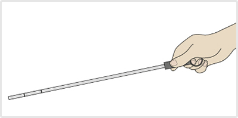
                            </div>
                                                <!-- <h4>578. Amikor az ábrán látható nívópálca két jelölése között van a motorolaj szintje, akkor az olajszint...</h4> -->
                        <dl>
                            <dt>578. Amikor az ábrán látható nívópálca két jelölése között van a motorolaj szintje, akkor az olajszint... <a href="#question-704441"><small>#704441</small></a></dt>
                                                            <dd class="correct">megfelelő.</dd>
                                                            <dd class="">magasabb az előírtnál.</dd>
                                                            <dd class="">alacsonyabb az előírtnál.</dd>
                                                    </dl>
                    </div>
                                                            <div class="question" id="question-704487">
                                                                        <!-- <h4>579. Ha a gépjárművet hidraulikus kormányszervóval szerelték fel, akkor a holtjáték ellenőrzésekor...</h4> -->
                        <dl>
                            <dt>579. Ha a gépjárművet hidraulikus kormányszervóval szerelték fel, akkor a holtjáték ellenőrzésekor... <a href="#question-704487"><small>#704487</small></a></dt>
                                                            <dd class="correct">a motort alapjáraton kell üzemeltetni.</dd>
                                                            <dd class="">a motort magas fordulatszámon kell járatni.</dd>
                                                            <dd class="">a motornak nem szabad járnia.</dd>
                                                            <dd class="">a motor járhat, de állhat is.</dd>
                                                    </dl>
                    </div>
                                                            <div class="question" id="question-704510">
                                                                        <!-- <h4>580. Milyen hűtőfolyadékkal kell feltölteni a zárt rendszerű, kiegyenlítő tartályos hűtőrendszert?</h4> -->
                        <dl>
                            <dt>580. Milyen hűtőfolyadékkal kell feltölteni a zárt rendszerű, kiegyenlítő tartályos hűtőrendszert? <a href="#question-704510"><small>#704510</small></a></dt>
                                                            <dd class="correct">Vízzel hígított fagyálló koncentrátummal vagy bekevert hűtőfolyadékkal, amely télen-nyáron egyformán használható.</dd>
                                                            <dd class="">Lágy vízzel, mert ennek a legjobb a hűtőképessége.</dd>
                                                            <dd class="">Desztillált vízzel, hogy a hűtőrendszerben elkerülhető legyen a vízkő kiválása.</dd>
                                                    </dl>
                    </div>
                                                            <div class="question" id="question-704517">
                                                                        <!-- <h4>581. Tovább közlekedhet-e gépjárművével, ha a hidraulikus kormányszervóban megszűnt az olajnyomás, de a hidraulikaolaj nem folyt el?</h4> -->
                        <dl>
                            <dt>581. Tovább közlekedhet-e gépjárművével, ha a hidraulikus kormányszervóban megszűnt az olajnyomás, de a hidraulikaolaj nem folyt el? <a href="#question-704517"><small>#704517</small></a></dt>
                                                            <dd class="correct">Igen, a legközelebbi javítóműhelyig közlekedhet.</dd>
                                                            <dd class="">Igen, hiszen a kormányszerkezet ilyenkor is ü�em)épes<�td>
                          �0     " (! �0           �0  ( `d class=""N�}, a lir��t azonnal el kell hárítani, vagy ` �épkocsit el kul,(wo�tatni.</dd>
                    `                ( $ �  b  �0        d�0sl!{s="">Igen, de anñllatos0c3˶kkentett sebessùg'ml közlekedni.</dd>
 �  b     " (! " (!     " (!      0 `(              </dl>
                ! � </div
�0   " ( �0                      �2 (!                     <dkv(blass<"�uestion" id="quds�ion-704518">
                                      ! �         0 `($�0"`, 0"       <�=- <h4>%8R&�Wépjárművének generˡTkra nem tölti az akkumulá4orU. Közlgkmehet-e tovább a oÉtkocsijával?</h4>!-�>
   � $b0" (   0"       <dl
�00"         ( $ �" j!     <�d>582n G�pjárművélec!gen�r��tora nem tölti az aik}luláuo�t. KözleJe`xet-e tovB��  � g��pkoksInáv!l?<a href="#questiol-?14518"><s-alM>#704518</small></a></dt>
                                                            <dd class="correct">Igen, azonban célszerű a meghibásodott generátort mielőbb kijavíttatni, mert ellenkező esetben az akkumulátor nagyon rövid idő alatt lemerül.</dd>
                                                            <dd class="">Nem, mert a villamos berendezések ilyenkor egyáltalán nem működnek.</dd>
                                                            <dd class="">Nem, mert az a villamos rendszer súlyos károsodását okozhatja.</dd>
                                                            <dd class="">Igen, mert az akkumulátor hosszú ideig képes önállóan is táplálni a fogyasztókat.</dd>
                                                    </dl>
                    </div>
                                                            <div class="question" id="question-704523">
                                                                        <!-- <h4>583. Kötelező-e a gépkocsi vezetőjének ellenőrizni a kormányberendezést (kormányholtjáték, szervokormány megfelelő működése, rendellenes zajok észlelése)?</h4> -->
                        <dl>
                            <dt>583. Kötelező-e a gépkocsi vezetőjének ellenőrizni a kormányberendezést (kormányholtjáték, szervokormány megfelelő működése, rendellenes zajok észlelése)? <a href="#question-704523"><small>#704523</small></a></dt>
                                                            <dd class="correct">Igen, a napi első elindulást megelőzően minden esetben.</dd>
                                                            <dd class="">Nem kötelező, de célszerű.</dd>
                                                            <dd class="">Igen, minden kerékcserét követően.</dd>
                                                            <dd class="">Igen, hetente legalább egyszer.</dd>
                                                    </dl>
                    </div>
                                                            <div class="question" id="question-704525">
                                                                        <!-- <h4>584. Közlekedhet-e tovább gépjárművével, ha elromlott annak üzemi fékberendezése?</h4> -->
                        <dl>
                            <dt>584. Közlekedhet-e tovább gépjárművével, ha elromlott annak üzemi fékberendezése? <a href="#question-704525"><small>#704525</small></a></dt>
                                                            <dd class="correct">Nem, mert ez jelentős baleseti kockázattal jár.</dd>
                                                            <dd class="">Igen, csökkentett sebességgel, a legközelebbi szakműhelyig.</dd>
                                                            <dd class="">Igen, feltéve, hogy a rögzítőfékkel hatásosan lehet fékezni a gépjárművet.</dd>
                                                            <dd class="">Igen, ha kétkörös fékberendezés esetén csak az egyik fékkör romlott el.</dd>
           (  $�0                     $ 0" ( $    "<'�l>O
        0 `(        </`if<
       " (!                 ` $0"  �0           ! �    " (=div class="qu�st+on" id="question-704528"?
�                                 $"0*!�  b   0 `(     " (!             �<!o- <x��(�. enn�i # tengelykap�so.ó ho|t*ˡtéka mEg�ume�ő bd�%ll�-t��s esetén?</h4> -->M
            " h! ` 0`<el>
  ( �$ b                 $ 0>dt>585. Mennyi a tengelykapcsolû Hkltjátèk� meofG`mM�� beállítás esetén?`8iJvef="#question-0�%28"><cm!dn>+64�":<'r-alM><+a.>/`t.�
 b     �� b� (c                0 p(`(                       d�0claSs�2�or0ect">A `e�me.ykapcsoló pedál elmozdulásáBa�0megadva körül`ed��l2-4 cm,<'ed>
   �  C                             �0           " (!      <dd class="">A tengelyKa�ssoló pedál elmozdulásában m%gaEva cÖvülbelül 6-8 cm.</dd>
     `                " (!                               �,dd class="">A t%ngDlykarc{n,ópedál elmozduláqécan megadva körC�l elül 8-10 cm.</dd>
(!                 0 `(            " (!      �0         $ 0>dd class="�>Aftulge|y+ipc3ol� pedál elmozdulC�w��`an megadva {��h��mbelül 30%p5 Bm.</dd>
         $ 0"     � f   �0     �0         $ 0  (!<-dd?
                    </div>
! � (!              �  b  ! � �0       ( $  & 8#           ,d)~ class="question" yd}*sumrtion-704535"?
�      �  b                             $ 0"                        $"0*!<!-- <h4?5�6. Mikor kell ell�n��rizni a gépj��rm� fékberendezésC�tm>/h4> -->
     ($4"              <fl�0                   �  b  0 |lu~�8. MiKo�0ke|l`mllenősi�ni a!gG�pjármű fékberantgzését? <a href="#question-704535"><wmqnl>#50<435</small></a<�tt>
     �  b                                 �  b       `     >dn!kmass="correct">Mhn�ejnqr, az első elindwlˠ� e.őtu.�/dd>
`! �                                     �0  $(0$$ 0"     <dd cl1s3"">Mielőtt a járm̱�al lakott területef Kǭvülm Ӻt{{aka�z�3 hijT"<`�>
       0 `(   �0                                `         <fd(blass="">A fékrendszer megbontásos javítását követően.</dd>
                                                            <dd class="">Ha a fékrendszer rendellenes működését tapasztalja.</dd>
                                                    </dl>
                    </div>
                                                            <div class="question" id="question-704550">
                                                                            <div class="exercise-image">
                                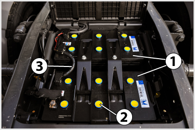
                            </div>
                                                <!-- <h4>587. A képen látható akkumulátor folyadékszintjét...</h4> -->
                        <dl>
                            <dt>587. A képen látható akkumulátor folyadékszintjét... <a href="#question-704550"><small>#704550</small></a></dt>
                                                            <dd class="correct">a 2-es jelű zárókupakok eltávolításával lehet ellenőrizni és szükség szerint utántölteni.</dd>
                                                            <dd class="">nem kell ellenőrizni.</dd>
                                                            <dd class="">a cellafeszültség mérésével lehet ellőrizni.</dd>
                                                            <dd class="">a tápfeszültség mérésével lehet ellenőrizni.</dd>
                                                    </dl>
                    </div>
                                                            <div class="question" id="question-704582">
                                                                            <div class="exercise-image">
                                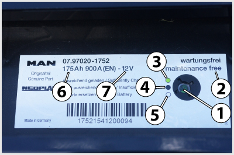
                            </div>
                                                <!-- <h4>588. A képen látható gondozásmentes akkumulátor 1-es jelű ’varázsszemének’ zöld színe azt jelenti, hogy...</h4> -->
                        <dl>
                            <dt>588. A képen látható gondozásmentes akkumulátor 1-es jelű ’varázsszemének’ zöld színe azt jelenti, hogy... <a href="#question-704582"><small>#704582</small></a></dt>
                                                            <dd class="correct">az akkumulátor megfelelően fel van töltve.</dd>
                                                            <dd class="">a folyadékszintet ellenőrizni kell.</dd>
                                                            <dd class="">az akkumulátor nincs megfelelően feltöltve.</dd>
                                                            <dd class="">az akkumulátort ki kell cserélni.</dd>
                                                    </dl>
                    </div>
                                                            <div class="question" id="question-704641">
                                                                            <div class="exercise-image">
                                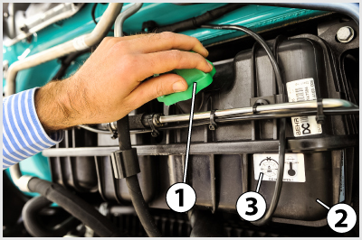
                            </div>
                                                <!-- <h4>589. Mire kell ügyelni a képen látható 1-es jelű kiegyenlítő tartály fedelével kapcsolatban?</h4> -->
                        <dl>
                            <dt>589. Mire kell ügyelni a képen látható 1-es jelű kiegyenlítő tartály fedelével kapcsolatban? <a href="#question-704641"><small>#704641</small></a></dt>
                                                            <dd class="correct">Ne csavarjuk le üzemmeleg, vagy különösen túlhevült motor esetén, mert a kilépő hűtőfolyadék, vagy annak gőzei égési sérüléseket okozhatnak.</dd>
                                                            <dd class="">Ne csavarjuk le hideg motor esetén, mert a hirtelen nyomáskiegyenlítődés hatására összeroppanhat a hűtő.</dd>
                                                    </dl>
                    </div>
                                                            <div class="question" id="question-704757">
                                                                        <!-- <h4>590. Milyen karbantartást igényel a száraz papírbetétes levegőszűrő?</h4> -->
                        <dl>
                            <dt>590. Milyen karbantartást igényel a száraz papírbetétes levegőszűrő? <a href="#question-704757"><small>#704757</small></a></dt>
                                                            <dd class="correct">A papírbetétet az előírt időközönként, illetve ha az eltömődöttségjelző jelez, ki kell cserélni és a szűrőházat ki kell tisztítani.</dd>
                                                            <dd class="">A szűrőházat félévente az előírt szintig fel kell tölteni olajjal és a szűrőbetétet ki kell mosni.</dd>
                                                            <dd class="">A szűrőbetétet az előírt időközönként szét kell szerelni és minden részét ki kell mosni, majd magasnyomású levegővel át kell fúvatni.</dd>
                                                    </dl>
                    </div>
                                                            <div class="question" id="question-704878">
                                                                        <!-- <h4>591. Mi a gépjárművezető teendője abban az esetben, ha a rugóerőtárolós rögzítőfék visszajelzője menet közben működésbe lép?</h4> -->
                        <dl>
                            <dt>591. Mi a gépjárművezető teendője abban az esetben, ha a rugóerőtárolós rögzítőfék visszajelzője menet közben működésbe lép? <a href="#question-704878"><small>#704878</small></a></dt>
                                                            <dd class="correct">A járművel meg kell állni, mert ha a levegő nyomása egy bizonyos szint alá csökken a rugóerőtárolós munkahengerekben, akkor a rögzítőfék fékezi a járművet.</dd>
                                                            <dd class="">Továbbfolytathatja az utat, mert a visszajelző a rendszer működőképességét jelzi.</dd>
                                                            <dd class="">Az első javítóműhelyig továbbközlekedhet.</dd>
                                                    </dl>
                    </div>
                                                            <div class="question" id="question-704947">
                                                                        <!-- <h4>592. Általában milyen színüek az üzemzavarra utaló, a megváltozott menettulajdonságokra figyelmeztető és a működésről tájékoztató visszajelző lámpák?</h4> -->
                        <dl>
                            <dt>592. Általában milyen színüek az üzemzavarra utaló, a megváltozott menettulajdonságokra figyelmeztető és a működésről tájékoztató visszajelző lámpák? <a href="#question-704947"><small>#704947</small></a></dt>
                                                            <dd class="correct">Piros, sárga, zöld.</dd>
                                                            <dd class="">Kék, zöld, sárga.</dd>
                                                            <dd class="">Piros, kék, sárga.</dd>
                                                            <dd class="">Piros, fehér, zöld.</dd>
                                                    </dl>
                    </div>
                                                            <div class="question" id="question-704948">
                                                                            <div class="exercise-image">
                                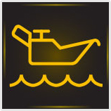
                            </div>
                                                <!-- <h4>593. Mi a gépjárművezető teendője, ha a jármű üzemeltetése során azt tapasztalja, hogy felgyullad a képen látható sárga színű figyelmeztető lámpa, amely a motorolaj alacsony szintjére utal?</h4> -->
                        <dl>
                            <dt>593. Mi a gépjárművezető teendője, ha a jármű üzemeltetése során azt tapasztalja, hogy felgyullad a képen látható sárga színű figyelmeztető lámpa, amely a motorolaj alacsony szintjére utal? <a href="#question-704948"><small>#704948</small></a></dt>
                                                            <dd class="correct">Nem kell azonnal megállnia, de a lehető legrövidebb időn belül ellenőriznie kell az olajszintet a nívópálcával is és - szükség szerint - gondoskodnia kell az utántöltésről.</dd>
                                                            <dd class="">Azonnal meg kell állnia, mert a motor alkatrészei rövid időn belül károsodnak.</dd>
                                                            <dd class="">Jeleznie kell a lámpa kigyulladását a következő karbantartás során a szakszervizben.</dd>
                                                    </dl>
                    </div>
                                                            <div class="question" id="question-704949">
                                                                            <div class="exercise-image">
                                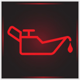
                            </div>
                                                <!-- <h4>594. Mi a gépjárművezető teendője, ha a jármű üzemeltetése során azt tapasztalja, hogy felgyullad a képen látható piros színű figyelmeztető lámpa, amely az alacsony motorolaj nyomásra utal?</h4> -->
                        <dl>
                            <dt>594. Mi a gépjárművezető teendője, ha a jármű üzemeltetése során azt tapasztalja, hogy felgyullad a képen látható piros színű figyelmeztető lámpa, amely az alacsony motorolaj nyomásra utal? <a href="#question-704949"><small>#704949</small></a></dt>
                                                            <dd class="correct">Meg kell állnia a járművel és le kell állítania a motort, majd ellenőriznie a motorolaj szintet. Csak akkor haladhat tovább a járművel, ha a megfelelő olajnyomás az olaj utántöltésével, vagy szükség szerinti javításával helyreállítható.</dd>
                                                            <dd class="">Továbbhaladhat az első javítóműhelyig, ahol meg kell javíttatni a gépjárművet.</dd>
                                                            <dd class="">Továbbhaladhat, ha a lámpa magas motorfordulatszámon elalszik.</dd>
                                                            <dd class="">Továbbhaladhat, ha ellenőrizte a motorolaj szintjét és azt rendben találta.</dd>
                                                    </dl>
                    </div>
                                                            <div class="question" id="question-704950">
                                                                        <!-- <h4>595. Mi a gépjárművezető teendője, ha a légfékes jármű üzemeltetése során azt tapasztalja, hogy csökken a levegő nyomása a légtartályokban és kigyullad az erre figyelmeztető lámpa is?</h4> -->
                        <dl>
                            <dt>595. Mi a gépjárművezető teendője, ha a légfékes jármű üzemeltetése során azt tapasztalja, hogy csökken a levegő nyomása a légtartályokban és kigyullad az erre figyelmeztető lámpa is? <a href="#question-704950"><small>#704950</small></a></dt>
                                                            <dd class="correct">A járművel meg kell állnia és csak a hiba elhárítása után haladhat tovább.</dd>
                                                            <dd class="">Az első javítóműhelyig csökkentett sebességgel továbbhaladhat.</dd>
                                                            <dd class="">Továbbhaladhat, mert akkor is tud fékezni a rögzítőfékkel, ha kiürül a légtartály.</dd>
                                                            <dd class="">Továbbhaladhat, ha a jármű rögzítőfékje képes az előírt biztonsági fékhatás kifejtésére.</dd>
                                                    </dl>
                    </div>
                                                            <div class="question" id="question-714546">
                                                                        <!-- <h4>596. Mire kell ügyelnie a hűtőfolyadék utántöltésénél, ha a motor hűtőrendszere a hűtőközeg lecsökkent szintje miatt jelentősen túlmelegedett?</h4> -->
                        <dl>
                            <dt>596. Mire kell ügyelnie a hűtőfolyadék utántöltésénél, ha a motor hűtőrendszere a hűtőközeg lecsökkent szintje miatt jelentősen túlmelegedett? <a href="#question-714546"><small>#714546</small></a></dt>
                                                            <dd class="correct">A leállítást követően körülbelül 45-50 Celsius fok alá hűtött motort újra beindítva, alapjáraton pótolja a folyadékhiányt.</dd>
                                                            <dd class="">A motor leállítása után azonnal el kell végezni a folyadékpótlást, így hamarabb lehűl a motor.</dd>
                                                            <dd class="">Az utántöltést minél előbb el kell végezni, a motort maximális fordulatszámon járatva.</dd>
                                                            <dd class="">Az utántöltést akkor kell elvégezni álló motor mellett, ha a motor már teljesen lehűlt.</dd>
                                                    </dl>
                    </div>
                                                            <div class="question" id="question-714547">
                                                                        <!-- <h4>597. Részt vehet-e gépkocsijával a közúti forgalomban, ha a kormányberendezésének a kormánykeréken - az elfordulás szögében - mért holtjátéka a 20 fokot jelentősen túllépi?</h4> -->
                        <dl>
                            <dt>597. Részt vehet-e gépkocsijával a közúti forgalomban, ha a kormányberendezésének a kormánykeréken - az elfordulás szögében - mért holtjátéka a 20 fokot jelentősen túllépi? <a href="#question-714547"><small>#714547</small></a></dt>
                                                            <dd class="correct">Nem, mert ezzel már veszélyezteti a közlekedésbiztonságot.</dd>
                                                            <dd class="">Igen, de a kormányberendezést mielőbb alaposan át kell vizsgálni.</dd>
                                                            <dd class="">Igen, mert ez a holtjáték még megengedhető.</dd>
                                                            <dd class="">Igen, de csak csökkentett sebességgel közlekedhet.</dd>
                                                    </dl>
                    </div>
                                                            <div class="question" id="question-714548">
                                                                        <!-- <h4>598. Üzemmeleg motor esetén szabad-e eltávolítani a zárt rendszerű hűtő-, illetve kiegyenlítő tartály zárósapkáját?</h4> -->
                        <dl>
                            <dt>598. Üzemmeleg motor esetén szabad-e eltávolítani a zárt rendszerű hűtő-, illetve kiegyenlítő tartály zárósapkáját? <a href="#question-714548"><small>#714548</small></a></dt>
                                                            <dd class="correct">Nem, mert a hűtőrendszerben uralkodó túlnyomás miatt forró folyadék, illetve gőz csaphat ki, ami égési sérülést okozhat.</dd>
                                                            <dd class="">Nem, mert hirtelen nyomásesés következik be, és a hűtő összeroppanhat.</dd>
                                                            <dd class="">Igen, előbb a kiegyenlítő tartály, majd a hűtő zárósapkáját.</dd>
                                                    </dl>
                    </div>
                                                            <div class="question" id="question-714549">
                                                                        <!-- <h4>599. Vontatható-e hosszabb távolságon keresztül a meghibásodott jármű, amelynek nyomás alatti olajzású a sebességváltóműve?</h4> -->
                        <dl>
                            <dt>599. Vontatható-e hosszabb távolságon keresztül a meghibásodott jármű, amelynek nyomás alatti olajzású a sebességváltóműve? <a href="#question-714549"><small>#714549</small></a></dt>
                                                            <dd class="correct">Kizárólag a kardántengelyek kiiktatását követően.</dd>
                                                            <dd class="">Igen, de csak maximum 30 km/h-s sebességgel.</dd>
                                                            <dd class="">Csak üresbe kapcsolt sebességváltóval.</dd>
                                                    </dl>
                    </div>
                                                            <div class="question" id="question-714550">
                                                                        <!-- <h4>600. Meg kell-e tisztítani a gumiabroncsot a felületére került ásványolaj-termékektől?</h4> -->
                        <dl>
                            <dt>600. Meg kell-e tisztítani a gumiabroncsot a felületére került ásványolaj-termékektől? <a href="#question-714550"><small>#714550</small></a></dt>
                                                            <dd class="correct">Igen, mert károsítják a gumiabroncs anyagát.</dd>
                                                            <dd class="">Nem, mert nincs káros hatásuk a gumiabroncs anyagára.</dd>
                                                    </dl>
                    </div>
                                                            <div class="question" id="question-714551">
                                                                        <!-- <h4>601. A hagyományos (gondozást igénylő) akkumulátorban milyen folyadékszint ítélhető megfelelőnek?</h4> -->
                        <dl>
                            <dt>601. A hagyományos (gondozást igénylő) akkumulátorban milyen folyadékszint ítélhető megfelelőnek? <a href="#question-714551"><small>#714551</small></a></dt>
                                                            <dd class="correct">Amikor a folyadék szintje az akkumulátor lemezeit 10-15 mm-rel ellepi.</dd>
                                                            <dd class="">Amikor a folyadékszint eléri a beöntőnyílás felső peremét.</dd>
                                                            <dd class="">Ha a folyadék szintje éppen az akkumulátor lemezeinek felső széléig ér.</dd>
                                                            <dd class="">Ha a folyadék szintje éppen az akkumulátor lemezeinek alsó széléig ér.</dd>
                                                    </dl>
                    </div>
                                                            <div class="question" id="question-714552">
                                                                        <!-- <h4>602. A járművek alvázmosása...</h4> -->
                        <dl>
                            <dt>602. A járművek alvázmosása... <a href="#question-714552"><small>#714552</small></a></dt>
                                                            <dd class="correct">akár nagynyomású vízsugárral, géppel vagy kézi eszközökkel is végezhető.</dd>
                                                            <dd class="">kisnyomású vízsugárral, kézzel végezhető.</dd>
                                                            <dd class="">kisnyomású vízsugárral, géppel végezhető.</dd>
                                                            <dd class="">nagynyomású vízsugárral, de csak kézzel végezhető.</dd>
                                                    </dl>
                    </div>
                                                            <div class="question" id="question-714553">
                                                                        <!-- <h4>603. Ha lecsökken a hagyományos akkumulátor folyadékszintje, milyen folyadékkal végezhető az utántöltése?</h4> -->
                        <dl>
                            <dt>603. Ha lecsökken a hagyományos akkumulátor folyadékszintje, milyen folyadékkal végezhető az utántöltése? <a href="#question-714553"><small>#714553</small></a></dt>
                                                            <dd class="correct">Tiszta desztillált vagy ioncserélt vízzel.</dd>
                                                            <dd class="">Tömény sósavval.</dd>
                                                            <dd class="">Csapvízzel.</dd>
                                                            <dd class="">Tömény kénsavval.</dd>
                                                    </dl>
                    </div>
                                                            <div class="question" id="question-714554">
                                                                        <!-- <h4>604. Hogyan lehet a motorolajszintet ellenőrizni a motorban?</h4> -->
                        <dl>
                            <dt>604. Hogyan lehet a motorolajszintet ellenőrizni a motorban? <a href="#question-714554"><small>#714554</small></a></dt>
                                                            <dd class="correct">Az olajteknőbe benyúló nívópálcával.</dd>
                                                            <dd class="">Az olajteknő oldalán elhelyezett szintjelző csavar kicsavarásával.</dd>
                                                            <dd class="">Az olajszűrőn elhelyezett vizsgálóablakban.</dd>
                                                            <dd class="">Csak szakszervizben tudják ellenőrizni a megfelelő műszerrel.</dd>
                                                    </dl>
                    </div>
                                                            <div class="question" id="question-714555">
                                                                        <!-- <h4>605. Hol lehet ellenőrizni a zárt rendszerű, kiegyenlítő tartályos hűtőrendszer folyadékszintjét?</h4> -->
                        <dl>
                            <dt>605. Hol lehet ellenőrizni a zárt rendszerű, kiegyenlítő tartályos hűtőrendszer folyadékszintjét? <a href="#question-714555"><small>#714555</small></a></dt>
                                                            <dd class="correct">Kizárólag a kiegyenlítő tartályban.</dd>
                                                            <dd class="">Csak a hűtőben.</dd>
                                                            <dd class="">A vízszivattyúnál.</dd>
                                                    </dl>
                    </div>
                                                            <div class="question" id="question-714557">
                                                                        <!-- <h4>606. Amikor a generátor megfelelően tölti az akkumulátort, akkor a műszerfalon elhelyezett ellenőrző lámpa...</h4> -->
                        <dl>
                            <dt>606. Amikor a generátor megfelelően tölti az akkumulátort, akkor a műszerfalon elhelyezett ellenőrző lámpa... <a href="#question-714557"><small>#714557</small></a></dt>
            `                                              <dd class="correct">egyálua�án nem világít.</dd>
        �  b        �0                        ! �          <dd class="">folyamat�s 4��z¶s fénnyel világítn<.E�>
                             $ 0"            ! �   `    `  dd rm��s="">vörösen villog�<&�.
    ( $" (! " (!$ 0"       ! � $ 0"   `     " (!          <dd class="">f�lq"oa|ns qùs'i fénnyel világít.</dd>
" (!                 `  " (!      ( $     �0     /�|>
      �0   " 8!`  �<'&Ir>
            `              ( $                            <div clasw=2suestion" id="ques|iOj-'1p=%:">
                           0 `(   0 `(   `�0                 0 `(     <!-- <h4>607. Ii|{en }��lon tölthető a lemer��ltakkumulátor?</h4> 
-�
                        <dl>
                    0 `(    <dt~60. Milyen móloO$�ölthgt� Aflemerült akou}wlátor? <a hreF=�3question-714558"><small>#74�$8</small></a><?D4�
      % �"   " (!        ! �     `         `            ( `d class="correct">EgYe�ӡrammal úgy, hogy a töltőár�m '�ő1sége ne ha,adK� m'g az akkumulátor névleges kapacitásának 1/10-C�td=/dd>
          ! �  $ 0"   �0        ( $       0 `8 `(         <dd class="">220 V%oS$h��lÒzati feszǼ|vségű váltakoz÷ Ӣr�emAh.</dd>
         `                      "(�0 �0     " (!      �  ~dd cma�s="">Egyenårqomal úgy, hogy a`t×ltőáram erőssége érje el az akkumulátor névlug%{ kapacitãsˠnak 50�-��t./�t>
   �! �                                               0(`$ <dd class="2>oyenárammal Ǻw{, hogy a töltőáram erőcs��ge ne haladja m�g #z akkumulátrhf��vlDges kapacitásá.`k�számértékét.</dd>
                  `     " (!        � (c" (!       </dl>
                   `</Eyv~
(!      `  ( % � % $ 0"0 `(( $       �0   ! �          <div class="questmkv0md="questyo.%714559">
          �0( $ ! �    ( $      ( $ � b�0                       �� ^c�� <*4>608. Tovább lehet-e üzemelue�ni a si�cttyús olaboZǡsú motort �}ikor abban az ol�jnyomás valamilyen meghibásodás miatt megszűnt?</h4> -->
                        <dl>
                            <dt>608. Tovább lehet-e üzemeltetni a szivattyús olajozású motort, amikor abban az olajnyomás valamilyen meghibásodás miatt megszűnt? <a href="#question-714559"><small>#714559</small></a></dt>
                                                            <dd class="correct">Nem.</dd>
                                                            <dd class="">Igen.</dd>
                                                    </dl>
                    </div>
                                                            <div class="question" id="question-714560">
                                                                        <!-- <h4>609. Alvázmosás után szükséges-e a jármű fékhatását ellenőrizni?</h4> -->
                        <dl>
                            <dt>609. Alvázmosás után szükséges-e a jármű fékhatását ellenőrizni? <a href="#question-714560"><small>#714560</small></a></dt>
                                                            <dd class="correct">Igen, mert a kerékfékszerkezetekbe bejutó víz átmenetileg érezhetően csökkentheti a fékhatást.</dd>
                                                            <dd class="">Nem, mert a a kerékfékekbe jutó víz nem befolyásolja a fékhatást.</dd>
                                                            <dd class="">Nem, mert a kerékfékek teljesen tömítettek, nem juthat a belsejükbe víz.</dd>
                                                            <dd class="">Csak télen, mert hideg időben nehezebben párolog el a kerékfékszerkezetekbe bejutó víz.</dd>
                                                    </dl>
                    </div>
                                                            <div class="question" id="question-714562">
                                                                        <!-- <h4>610. Miről ismerhető fel, hogy egy henger nem működik a többhengeres motorban?</h4> -->
                        <dl>
                            <dt>610. Miről ismerhető fel, hogy egy henger nem működik a többhengeres motorban? <a href="#question-714562"><small>#714562</small></a></dt>
                                                            <dd class="correct">Egyenetlenné válik az üresjárat és a motor teljesítménye is lecsökken.</dd>
                                                            <dd class="">A motor lefullad.</dd>
                                                            <dd class="">A motor erős, kopogó zajt bocsát ki.</dd>
                                                    </dl>
                    </div>
                                                            <div class="question" id="question-714564">
                                                                        <!-- <h4>611. Kell-e meghatározott időközönként motorolajcserét végezni?</h4> -->
                        <dl>
                            <dt>611. Kell-e meghatározott időközönként motorolajcserét végezni? <a href="#question-714564"><small>#714564</small></a></dt>
                                                            <dd class="correct">Igen, az előírt futás-, esetleg munkaóra-teljesítmény után.</dd>
                                                            <dd class="">Igen, a téli és nyári időszakok váltakozásának megfelelően.</dd>
                                                            <dd class="">Nem, elegendő az elfogyasztott kenőolaj-mennyiség rendszeres pótlása tiszta kenőanyaggal.</dd>
                                                    </dl>
                    </div>
                                                            <div class="question" id="question-714565">
                                                                            <div class="exercise-image">
                                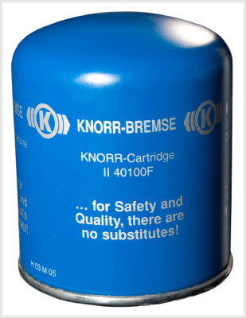
                            </div>
                                                <!-- <h4>612. A képen látható légszárító patron...</h4> -->
                        <dl>
                            <dt>612. A képen látható légszárító patron... <a href="#question-714565"><small>#714565</small></a></dt>
                                                            <dd class="correct">cseréjét a szennyezettségtől függően egy-két évente el kell végezni.</dd>
                                                            <dd class="">nem igényel karbantartást.</dd>
                                                            <dd class="">cseréjét 10.000 km-enként el kell végezni.</dd>
                                                    </dl>
                    </div>
                                                            <div class="question" id="question-714566">
                                                                            <div class="exercise-image">
                                
                            </div>
                                                <!-- <h4>613. A képen látható 1-es jelű akkumulátorokba a 2-es jelű zárókupakok eltávolítása után az előírt folyadékszintig szükség szerint...</h4> -->
                        <dl>
                            <dt>613. A képen látható 1-es jelű akkumulátorokba a 2-es jelű zárókupakok eltávolítása után az előírt folyadékszintig szükség szerint... <a href="#question-714566"><small>#714566</small></a></dt>
                                                            <dd class="correct">desztillált vizet kell tölteni.</dd>
                                                            <dd class="">kénsavat kell tölteni.</dd>
                                                            <dd class="">csapvizet kell tölteni.</dd>
                                                            <dd class="">sósavat kell tölteni.</dd>
                                                    </dl>
                    </div>
                                                            <div class="question" id="question-714567">
                                                                            <div class="exercise-image">
                                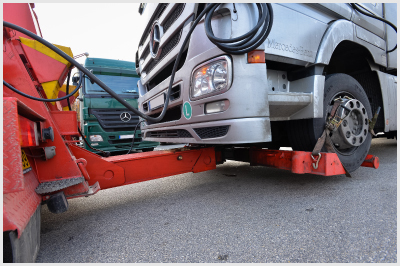
                            </div>
                                                <!-- <h4>614. A képen látható módon, megemelt mellső futóművel kell vontatni a gépjárművet, ha...</h4> -->
                        <dl>
                            <dt>614. A képen látható módon, megemelt mellső futóművel kell vontatni a gépjárművet, ha... <a href="#question-714567"><small>#714567</small></a></dt>
                                                            <dd class="correct">kormányszerkezete működésképtelen, vagy szervókormányából elfolyt az olaj.</dd>
                                                            <dd class="">motorja működésképtelen.</dd>
                                                            <dd class="">sebességváltója működésképtelen.</dd>
                                                            <dd class="">elektromos rendszere nem működik.</dd>
                                                    </dl>
                    </div>
                                                            <div class="question" id="question-714568">
                                                                            <div class="exercise-image">
                                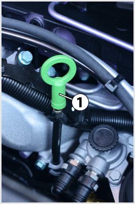
                            </div>
                                                <!-- <h4>615. A képen látható 1-es jelű olajszintjelző pálcával a motor kenőolajszintje...</h4> -->
                        <dl>
                            <dt>615. A képen látható 1-es jelű olajszintjelző pálcával a motor kenőolajszintje... <a href="#question-714568"><small>#714568</small></a></dt>
                                                            <dd class="correct">álló motoron ellenőrizhető, a motor leállítását követően kellő időt hagyva arra, hogy a kenőolaj visszafolyjon az olajteknőbe.</dd>
                                                            <dd class="">járó motoron ellenőrizhető, a motor beindítását követően kellő időt hagyva arra, hogy a kenőolaj elérje az üzemmeleg állapotot.</dd>
                                                            <dd class="">álló és járó motoron egyaránt ellenőrizhető.</dd>
                                                    </dl>
                    </div>
                                                            <div class="question" id="question-714570">
                                                                            <div class="exercise-image">
                                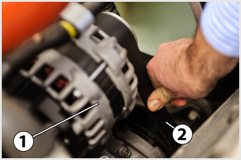
                            </div>
                                                <!-- <h4>616. A képen látható 1-es jelű generátort hajtó 2-es jelű ékszíj feszessége akkor megfelelő, ha annak behajlása kézzel benyomva...</h4> -->
                        <dl>
                            <dt>616. A képen látható 1-es jelű generátort hajtó 2-es jelű ékszíj feszessége akkor megfelelő, ha annak behajlása kézzel benyomva... <a href="#question-714570"><small>#714570</small></a></dt>
                                                            <dd class="correct">10-20 mm.</dd>
                                                            <dd class="">0-10 mm.</dd>
                                                            <dd class="">20-40 mm.</dd>
                                                            <dd class="">40-60 mm.</dd>
                                                    </dl>
                    </div>
                                                            <div class="question" id="question-714574">
                                                                            <div class="exercise-image">
                                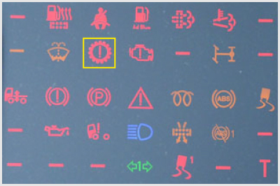
                            </div>
                                                <!-- <h4>617. Mire figyelmeztet a képen a bekeretezett visszajelző lámpa?</h4> -->
                        <dl>
                            <dt>617. Mire figyelmeztet a képen a bekeretezett visszajelző lámpa? <a href="#question-714574"><small>#714574</small></a></dt>
                                                            <dd class="correct">A sebességváltóval kapcsolatos hibára, vagy rendellenességre.</dd>
                                                            <dd class="">A differenciálművel kapcsolatos hibára, vagy rendellenességre.</dd>
                                                            <dd class="">A differenciálzár bekapcsolt állapotára.</dd>
                                                    </dl>
                    </div>
                                                            <div class="question" id="question-714575">
                                                                            <div class="exercise-image">
                                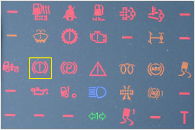
                            </div>
                                                <!-- <h4>618. Mire figyelmeztet a képen a bekeretezett visszajelző lámpa?</h4> -->
                        <dl>
                            <dt>618. Mire figyelmeztet a képen a bekeretezett visszajelző lámpa? <a href="#question-714575"><small>#714575</small></a></dt>
                                                            <dd class="correct">A fékrendszerrel kapcsolatos hibára vagy rendellenességre.</dd>
                                                            <dd class="">A sebességváltóval kapcsolatos hibára, vagy rendellenességre.</dd>
                                                            <dd class="">A differenciálművel kapcsolatos hibára, vagy rendellenességre.</dd>
                                                            <dd class="">A differenciálzár bekapcsolt állapotára.</dd>
                                                    </dl>
                    </div>
                                                            <div class="question" id="question-714576">
                                                                            <div class="exercise-image">
                                
                            </div>
                                                <!-- <h4>619. Tovább közlekedhet-e járművével (járműszerelvényével), ha menet közben kigyullad a képen bekeretezett visszajelző lámpa?</h4> -->
                        <dl>
                            <dt>619. Tovább közlekedhet-e járművével (járműszerelvényével), ha menet közben kigyullad a képen bekeretezett visszajelző lámpa? <a href="#question-714576"><small>#714576</small></a></dt>
                                                            <dd class="correct">Nem.</dd>
                                                            <dd class="">Igen.</dd>
                                                            <dd class="">Igen, csökkentett sebességgel.</dd>
                                                            <dd class="">Igen, a legközelebbi szakműhelyig.</dd>
                                                    </dl>
                    </div>
                                                            <div class="question" id="question-714578">
                                                                        <!-- <h4>620. Mikor kell a motorolajat utántölteni?</h4> -->
                        <dl>
                            <dt>620. Mikor kell a motorolajat utántölteni? <a href="#question-714578"><small>#714578</small></a></dt>
                                                            <dd class="correct">Ha a motorolaj szintje felülről megközelíti, vagy eléri a mérőpálca minimum jelzését.</dd>
                                                            <dd class="">Mindig, ha a motorolaj szintje nem éri el a mérőpálca maximum jelzését.</dd>
                                                            <dd class="">Havonta egyszer mindig után kell tölteni.</dd>
                                                    </dl>
                    </div>
                                                            <div class="question" id="question-714579">
                                                                        <!-- <h4>621. Korszerű, zárt rendszerű, gondozásmentes akkumulátornál az állapotjelző (varázsszem) milyen színnel jelzi a töltött és töltetlen állapotot?</h4> -->
                        <dl>
                            <dt>621. Korszerű, zárt rendszerű, gondozásmentes akkumulátornál az állapotjelző (varázsszem) milyen színnel jelzi a töltött és töltetlen állapotot? <a href="#question-714579"><small>#714579</small></a></dt>
                                                            <dd class="correct">A töltött állapotot zöld, a töltetlen állapotot fekete színnel jelzi.</dd>
                                                            <dd class="">A töltött állapotot sárga, a töltetlen állapotot fekete színnel jelzi.</dd>
                                                            <dd class="">A töltött állapotot kék, a töltetlen állapotot piros színnel jelzi.</dd>
                                                            <dd class="">A töltött állapotot piros, a töltetlen állapotot kék színnel jelzi.</dd>
                                                    </dl>
                    </div>
                                                            <div class="question" id="question-714580">
                                                                        <!-- <h4>622. Az egytárcsás, száraz súrlódású, hidrawlajus működtetésű tengelykapcsoló foly!d�kt#rtályába a szint csökkenése esetén milyen folyadékot sza"adutántölteni?</h4> -->
                        <dl>
        �  b                <dt>603&�Az�eg;tárcsC��n 1záraz súrlódású, hidraulakUw mձ+˶dtetésű tengelykapcsoló folyadèk�artályába a szint csökkeláre ese�é, milyen folyadékot szabad u�á,tölteni? <a href="#au%{tion-7145�0"|<small>#714580</small></a><odt
                                 0 `(        (`$  �  b    <dd0k,Iws="Co�buat">Fékfoly!dÈkOt�,/dd>
                                 $ 0"      0$`8"  ! � ! �   <dd cl`s�="">Hidr�ul+ka ol�ja6.</dd>
     ( $                    �0                  (0d(     4dD$class="">Tengelykapcsoló onab`t.</dd>
  ! �                      �0      " (! 0 `(           �0 <dd class="">Fagyálló folyadékot.</dd6
*$0 `(                 �0 (   0"      ( $         </dl>
           " �! b   </div>
�  b                      �0      `              �  b( $ <div class="quesTion" id="question-714581">
                                                                        <!-- <h4>623. Hidraulikus szervokormánnyal ellátott járműnél hogyan lehet ellenőrizni a kormánykerék holtjátékát?</h4> -->
                        <dl>
                            <dt>623. Hidraulikus szervokormánnyal ellátott járműnél hogyan lehet ellenőrizni a kormánykerék holtjátékát? <a href="#question-714581"><small>#714581</small></a></dt>
                                                            <dd class="correct">Járó motornál kell ellenőrizni, mert álló motornál a szerkezet működéséből adódóan nagyobb holtjátékot mérhetünk.</dd>
                                                            <dd class="">Csak álló motornál lehet ellenőrizni, mert járó motornál a szerkezet működéséből adódóan nagyobb holtjátékot kapnánk.</dd>
                                                            <dd class="">Járó és álló motornál is lehet ellenőrizni,0m%zt nincs különbség�a *oltjáték nagys¡�ábann,/l6
*  0"    ( $                           ( $         </dl>
                    </div>
  ! �                        ( $         ( % �            <div class="qu�st+on" id="question-714%8s*>
 0"                                            �  b                     <!-- <h4>624. Lehat=g�el.enőrizni a légfékreld{{er komrrmrszorának szállítási te|j%{ítméoyG�t?</h4> -->
       `      `       <dl>
         0 `($ 0"           <dt>624. Lehet-e dl�enőrizni$A0�өgfëczDjdszer kmmxsesszorának szállítási teljesítmé.yÈt? <a href="#questi/n-14583"><smaLl�371458;<wmall></a>=/�t>
! �       �4 0"                                 0 `( �  b` |Edchacq="correct">Igdn� a műszesf�lon taláhhqvó légnyomásmérő-műszerekel nhgyelve az üres rendszer feltödt�si i�ej��t.|/dE>
     $ 0"            �  ` (!                    0 `(        <dd�cl#ss=""?C�ak szakműhel{bmo lehet ul,mnőrizni a megfelelő mDZ{{errel.</dd~
    ! �      0 `(                     `     $ 0"         `4dm Cxcs�="`>Csak közvetetten lehet ellen��rHzni, a jármı�lassulá{m�rővel végzett fékhatásvizsgálata során.</dd>
            " (!!�� b   ! �                         </ll	*$        �  b       </div>
                                                      ( $  >daw class="question" id-"1}est)on7165440<	 (!          ! �                $ 0"         (",!            " (!          <div class="%xdS�icg-im`g�">
    �  b  $ 0"                  
    $ 02 `(                 </div>
        $ 0"                  0 `(    ! �       <!-- <h4>625. La0c motorolaj szintje a mër͐páLcC�o �evő$juo�2lések között látható, !kkNs � szint magassága...</h4>-�.
                        �dl|
�  b         ( , $        <dt>6:5$Ha a moto2ol@j szinTj�0a mérőpálcán l%vǰ(kelölések közæt4(látható, akkmr(` szint"mifqs3ˡga�..b<a href="#question-754%:5"><sMa�|>#1�8�,/sm�ll|>/k?4.dd>M       0 ` �0 �� !C�     ( $   ( $          0 `(  "�(!b <`d0alass="cOr�uct">ez előírtnak megfelelő.|/dE>
 $ 0�  b                `      `! �      �  b    $ 0"      <dd class="">az előírtnál kisebb.</dD>�        `       �0$ 0"                                  ( `d class="">az előírtnC�lbnagyobb.</dd>
* �0`(($4& 0"                         ( $          </dl>M
  (!    �0        </div>
    �0                                    " (!             <div cLa�c="sumrtion" id="question-7r111">
                  $ 0"   0`�0   `     ( $    0 `(  �0    ( �  b ! �<!-- <h4>626. SzüjsG�� v#n-e a sebességvált��mŐ� i.letvE �0differenciálmŰ �arCantartására?</h$>`%->
   ( $        " (!  ( 8dl>
                            <dt>626. Szüksé' v@l-m!a sebesr�-gváltÓmE�, i,leUve a differenciálmű karbantartásǡbc? <a href=##�uestion-721111"><soqd-6#721111</small><�a>~/dt>
           0 `(     �0( $ " (! 0 `(                `     <dd class="correct>�wen, előírt ie�közönként, illetve futásteljesét}��nyt követően a: oMAj�jintet kell ellenőrizni, illetve cserélni az elhasználódott kenőolajat.</dd>
                                                            <dd class="">Nem, ezek a berendezések egyáltalán nem igényelnek karbantartást.</dd>
                                                            <dd class="">Igen, ezekben a berendezésekben télen és nyáron eltérő olajtípust használnak, ezért ennek megfelelően kell olajat cserélni.</dd>
                                                    </dl>
                    </div>
                                                            <div class="question" id="question-721113">
                                                                        <!-- <h4>627. Természetes-e normál igénybevétel esetén, hogy az ablaktörlő gumilapátja idővel veszít a törlőképességéből, ezért szükséges a cseréje?</h4> -->
                        <dl>
                            <dt>627. Természetes-e normál igénybevétel esetén, hogy az ablaktörlő gumilapátja idővel verzG�t�q törm�oùrességéből, ezért szükqáfes a cseréje? <! hSef="#1weZuio�-7p1113"><smaLm��721113</small></a></dt>�
 c �" (!            " (!                         �  b    ! �<dd class="�or0ect">Igenl a[ ablakt��rMő lap��tNk ouMméLe�{opik, illetve öRe�czik, e:éSt azokat időköz��{ént cqez©lni kell.</d`>           �  b`            `               $ 0"          <dd class="">Nem �urt az ablaktörlő`lcQˠtok csak durva külső behatásd��d károsodhat�akl</dd>
  " (a                  �0          ( $                   <dd class="">Nem, mert az ablak|Övlő lapátoket0veljesen kopñs-mntes kivite�b%$ készítik.</dd
�0                 " (!   ( $          0 `(  ( $   <'dL2
*$  `     " *!(!  ( +div>
       �0                                    " (!          <d)v Blass="pu�stion" hd�"questign
321!1t*>
        "  !$                         $� "       ( $                    "<lhv class=&ehgrcise-�m!-e">
   $ 0" �0`( $ 1"�             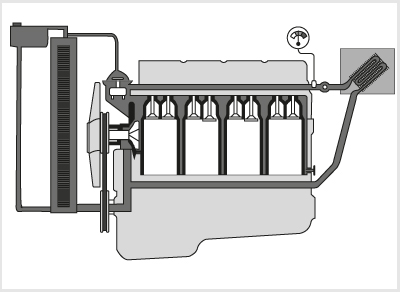
    " (!       $ 0"                  0 `(       ,!m% 4h:628. Hol végezhető em!��Fo�iadékszint ellenőrzísu"az ábrá� l��tható hűtőrantqz�rb'n?</h4> -->
$  0 `(            �0 <dl>
$               `         <dt>628. Hol végezhető el a folyadékszint elleN�BzC�se az ábrán!lG�tható hűtőbe.lwzupban/"<a href="#question-721�14`>|smll#721114</small></a></$t>,
   `      �  b                                             <dd class="co�re!t�>Abhűtőrendszer kiegyenlítő tartályábcn&=/dd>
      " (!  �0                          $ 0"$ 0"           <dd class="">A termosztátnál.</dd>
                       0 `(               ( $       �0   `<dE class="�Q"vˬzszivattyú�á..8/tf>
$ 0"           0 `(  �0         (",!    " (!      </dl>
                    </div>
                              �0                           <div class="question" i$=P�ustion-7"1q95">
               "�8!                ( $       �  b             " (!   <!-- <h4>629. Mikor kötelező ellenőrizni, illetve szükség szerint utánhúzni a jármű kerekeit rögzítő csavarokat?</h4> -->
                        <dl>
                            <dt>629. Mikor kötelező ellenőrizni, illetve szükség szerint utánhúzni a jármű kerekeit rögzítő csavarokat? <a href="#question-721115"><small>#721115</small></a></dt>
                                                            <dd class="correct">Az időszakos karbantartások során, illetve kerékcserét követően.</dd>
                                                            <dd class="">Erre egyáltalán nincs szükség.</dd>
                                                            <dd class="">Minden nap, az első elindulás előtt.</dd>
                                                            <dd class="">Heti rendszerességgel.</dd>
                                                    </dl>
                    </div>
                                                            <div class="question" id="question-721116">
                                                                        <!-- <h4>630. Milyen kenőolaj tölthető be a sebességváltóműbe, illetve a differenciálműbe?</h4> -->
                        <dl>
                            <dt>630. Milyen kenőolaj tölthető be a sebességváltóműbe, illetve a differenciálműbe? <a href="#question-721116"><small>#721116</small></a></dt>
                                                            <dd class="correct">Kizárólag a gyári előírásnak megfelelő hajtóműolaj.</dd>
                                                            <dd class="">A jármű motorjában alkalmazottal megegyező motorolaj.</dd>
                                                            <dd class="">Tetszőleges típusú hajtóműolaj.</dd>
                                                    </dl>
                    </div>
                                                            <div class="question" id="question-721117">
                                                                        <!-- <h4>631. Milyen sűrűn kell ellenőrizni a hagyományos ólomakkumulátor folyadékszintjét?</h4> -->
                        <dl>
                            <dt>631. Milyen sűrűn kell ellenőrizni a hagyományos ólomakkumulátor folyadékszintjét? <a href="#question-721117"><small>#721117</small></a></dt>
                                                            <dd class="correct">Nyáron kéthetente, télen havonta.</dd>
                                                            <dd class="">Évente egyszer.</dd>
                                                            <dd class="">Naponta.</dd>
                                                            <dd class="">Félévente.</dd>
                                                    </dl>
                    </div>
                                                            <div class="question" id="question-721118">
                                                                        <!-- <h4>632. A járművek felső mosása...</h4> -->
                        <dl>
                            <dt>632. A járművek felső mosása... <a href="#question-721118"><small>#721118</small></a></dt>
                                                            <dd class="correct">kisnyomású vízsugárral, géppel vagy kézzel történhet.</dd>
                                                            <dd class="">csak kézzel végezhető.</dd>
                                                            <dd class="">csak nagynyomású vízsugárral végezhető.</dd>
                                                            <dd class="">csak géppel végezhető.</dd>
                                                    </dl>
                    </div>
                                                            <div class="question" id="question-721119">
                                                                        <!-- <h4>633. A segédberendezéseket (generátor, ventilátor, vízszivattyú, szervoszivattyú stb.) hajtó ékszíj feszessége akkor megfelelő, ha kézzel megnyomva a behajlása nem több, mint...</h4> -->
                        <dl>
                            <dt>633. A segédberendezéseket (generátor, ventilátor, vízszivattyú, szervoszivattyú stb.) hajtó ékszíj feszessége akkor megfelelő, ha kézzel megnyomva a behajlása nem több, mint... <a href="#question-721119"><small>#721119</small></a></dt>
                                                            <dd class="correct">kb. 10-20 mm.</dd>
                                                            <dd class="">kb. 0-5 mm.</dd>
                                                            <dd class="">kb. 50-60 mm.</dd>
                                                    </dl>
                    </div>
                                                            <div class="question" id="question-721120">
                                                                            <div class="exercise-image">
                                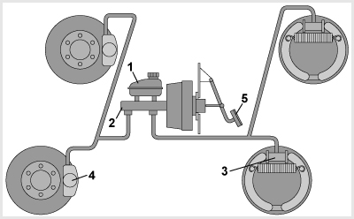
                            </div>
                                                <!-- <h4>634. Hol kell a fékfolyadék szintjét rendszeresen ellenőrizni az ábrán látható hidraulikus fékberendezésen?</h4> -->
                        <dl>
                            <dt>634. Hol kell a fékfolyadék szintjét rendszeresen ellenőrizni az ábrán látható hidraulikus fékberendezésen? <a href="#question-721120"><small>#721120</small></a></dt>
                                                            <dd class="correct">Az 1-es jelű műanyag fékfolyadéktartályban.</dd>
                                                            <dd class="">A 3-as és 4-es jelű fékhengerek vizsgálócsatlakozóin.</dd>
                                                            <dd class="">A 2-es jelű főfékhenger vizsgálónyílásában.</dd>
                                                            <dd class="">Az 5-ös jelű fékpedál lenyomásával.</dd>
                                                    </dl>
                    </div>
                                                            <div class="question" id="question-721121">
                                                                        <!-- <h4>635. Mi a teendő, amikor az alvázmosás után lecsökken a fékhatás?</h4> -->
                        <dl>
                            <dt>635. Mi a teendő, amikor az alvázmosás után lecsökken a fékhatás? <a href="#question-721121"><small>#721121</small></a></dt>
                                                            <dd class="correct">A vizet lassú haladás közben, gyengén fékezve el kell párologtatni a kerékfékszerkezetekből.</dd>
                                                            <dd class="">Meleg levegőt kell fúvatni a kerékfékekre, hogy a víz elpárologhasson belőlük.</dd>
                                                            <dd class="">Addig nem lehet elindulni, amíg a víz el nem párolog a kerékfékekből.</dd>
                                                            <dd class="">A járművet az üzemi fékkel és a rögzítőfékkel együtt kell fékezni addig, amíg a fékhatás újra eléri a szokásos értéket.</dd>
                                                    </dl>
                    </div>
                                                            <div class="question" id="question-721122">
                                                                        <!-- <h4>636. Milyen hibára utal, ha a négyütemű motor kenőolajszintje folyamatosan csökken, és azt gyakran kell utántölteni?</h4> -->
                        <dl>
                            <dt>636. Milyen hibára utal, ha a négyütemű motor kenőolajszintje folyamatosan csökken, és azt gyakran kell utántölteni? <a href="#question-721122"><small>#721122</small></a></dt>
                                                            <dd class="correct">Az olajfogyasztás megnövekedett, ami elhasználódott, erősen kopott, esetleg tömítetlen motorra utal. Célszerű a jelenség pontos okát feltárni és szükség szerint kiküszöbölni.</dd>
                                                            <dd class="">Súlyos üzemzavarra utal, ezért a motort nem szabad tovább üzemeltetni.</dd>
                                                            <dd class="">Nem utal hibára, a belső égésű motorok jelentős mennyiségű kenőolajat fogyasztanak.</dd>
                                                    </dl>
                    </div>
                                                            <div class="question" id="question-721123">
                                                                        <!-- <h4>637. Helytelen mellső futómű-beállítás esetén...</h4> -->
                        <dl>
                            <dt>637. Helytelen mellső futómű-beállítás esetén... <a href="#question-721123"><small>#721123</small></a></dt>
                                                            <dd class="correct">a gépjármű kormányozhatósága és stabilitása romlik, a gumiabroncskopás megnő, illetve rendellenessé válik.</dd>
                                                            <dd class="">a gépjármű felfüggesztésének alkatrészei károsodhatnak.</dd>
                                                            <dd class="">megnövekszik a gépjármű kormányberendezésének a holtjátéka.</dd>
                                                            <dd class="">nagymértékben növekszik a gépjármű tüzelőanyagfogyasztása.</dd>
                                                    </dl>
                    </div>
                                                            <div class="question" id="question-721124">
                                                                        <!-- <h4>638. Miért nem szabad hosszabb távolságra vontatni a legtöbb tehergépkocsit a kardántengelyének kikötése nélkül?</h4> -->
                        <dl>
                            <dt>638. Miért nem szabad hosszabb távolságra vontatni a legtöbb tehergépkocsit a kardántengelyének kikötése nélkül? <a href="#question-721124"><small>#721124</small></a></dt>
                                                            <dd class="correct">Mert ilyenkor a sebességváltómű - a kenés kimaradása miatt - tönkremegy.</dd>
                                                            <dd class="">Mert ilyenkor kenés hiányában károsodik a gépjármű motorja.</dd>
                                                            <dd class="">Mert ez jelentős gumiabroncskopással jár.</dd>
                                                    </dl>
                    </div>
                                                            <div class="question" id="question-721127">
                                                                            <div class="exercise-image">
                                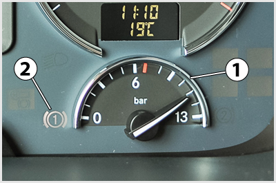
                            </div>
                                                <!-- <h4>639. A képen látható tehergépkocsi műszerfalon a 2-es jelű lámpa azt jelzi, hogy...</h4> -->
                        <dl>
                            <dt>639. A képen látható tehergépkocsi műszerfalon a 2-es jelű lámpa azt jelzi, hogy... <a href="#question-721127"><small>#721127</small></a></dt>
                                                            <dd class="correct">a mellette lévő nyomásmérő az egyes fékkör tartálynyomását mutatja.</dd>
                                                            <dd class="">az egyes fékkör légnyomása nem éri el a minimálisan szükséges értéket.</dd>
                                                            <dd class="">az egyes fékkör légnyomása eléri a minimálisan szükséges értéket.</dd>
                                                            <dd class="">az egyes fékkör légnyomása meghaladja a minimálisan szükséges értéket.</dd>
                                                    </dl>
                    </div>
                                                            <div class="question" id="question-721128">
                                                                            <div class="exercise-image">
                                
                            </div>
                                                <!-- <h4>640. A képen látható gondozásmentes akkumulátor 1-es jelű ’varázsszemének’ fekete színe azt jelenti, hogy...</h4> -->
                        <dl>
                            <dt>640. A képen látható gondozásmentes akkumulátor 1-es jelű ’varázsszemének’ fekete színe azt jelenti, hogy... <a href="#question-721128"><small>#721128</small></a></dt>
                                                            <dd class="correct">az akkumulátor nincs megfelelően feltöltve.</dd>
                                                            <dd class="">a folyadékszintet ellenőrizni kell.</dd>
                                                            <dd class="">az akkumulátor megfelelően fel van töltve.</dd>
                                                            <dd class="">az akkumulátort ki kell cserélni.</dd>
                                                    </dl>
                    </div>
                                                            <div class="question" id="question-721129">
                                                                            <div class="exercise-image">
                                
                            </div>
                                                <!-- <h4>641. A képen látható gondozásmentes akkumulátor 1-es jelű ’varázsszemének’ fehér színe azt jelenti, hogy...</h4> -->
                        <dl>
                            <dt>641. A képen látható gondozásmentes akkumulátor 1-es jelű ’varázsszemének’ fehér színe azt jelenti, hogy... <a href="#question-721129"><small>#721129</small></a></dt>
                                                            <dd class="correct">az akkumulátort ki kell cserélni.</dd>
                                                            <dd class="">a folyadékszintet ellenőrizni kell.</dd>
                                                            <dd class="">az akkumulátor megfelelően fel van töltve.</dd>
                                                            <dd class="">az akkumulátor nincs megfelelően feltöltve.</dd>
                                                    </dl>
                    </div>
                                                            <div class="question" id="question-721130">
                                                                            <div class="exercise-image">
                                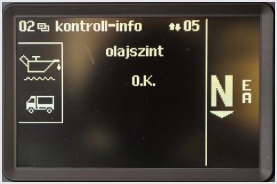
                            </div>
                                                <!-- <h4>642. Mire utal a tehergépkocsi fedélzeti számítógépe által küldött, képen látható üzenet?</h4> -->
                        <dl>
                            <dt>642. Mire utal a tehergépkocsi fedélzeti számítógépe által küldött, képen látható üzenet? <a href="#question-721130"><small>#721130</small></a></dt>
                                                            <dd class="correct">A motor kenőolajszintjét a rendszer képes érzékelni, és az megfelelő.</dd>
                                                            <dd class="">A motor kenőolajnyomását a rendszer képes érzékelni, és az megfelelő.</dd>
                                                            <dd class="">A motor kenőolajszintjét a rendszer képes érzékelni, és az nem megfelelő.</dd>
                                                            <dd class="">A motor kenőolajnyomását a rendszer képes érzékelni, és az nem megfelelő.</dd>
                                                    </dl>
                    </div>
                                                            <div class="question" id="question-721131">
                                                                            <div class="exercise-image">
                                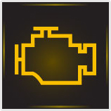
                            </div>
                                                <!-- <h4>643. A képen látható visszajelző lámpa felgyulladása...</h4> -->
                        <dl>
                            <dt>643. A képen látható visszajelző lámpa felgyulladása... <a href="#question-721131"><small>#721131</small></a></dt>
                                                            <dd class="correct">a motorvezérlés hibájára utal. Ha ez járó motor esetén világít, akkor a járművet a lehető leghamarabb szakszervizbe kell vinni.</dd>
                                                            <dd class="">a motorvezérlés hibájára utal. Ha ez járó motor esetén világít, akkor a járművel továbbhaladni tilos, a motort azonnal le kell állítani.</dd>
                                                            <dd class="">a motor kenőrendszerében uralkodó túl alacsony nyomást jelzi. Ha ez járó motor esetén világít, akkor a járművel továbbhaladni tilos, a motort azonnal le kell állítani.</dd>
                                                            <dd class="">a motor túlságosan alacsony kenőolajszintjére utal, ezért a motorolaj mennyiségét ellenőrizni és szükség szerint pótolni kell.</dd>
                                                    </dl>
                    </div>
                                                            <div class="question" id="question-721132">
                                                                            <div class="exercise-image">
                                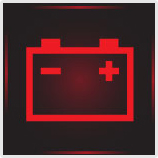
                            </div>
                                                <!-- <h4>644. Ha a képen látható 6-os jelű visszajelző lámpa járó motor esetén felgyullad, akkor...</h4> -->
                        <dl>
                            <dt>644. Ha a képen látható 6-os jelű visszajelző lámpa járó motor esetén felgyullad, akkor... <a href="#question-721132"><small>#721132</small></a></dt>
                                                            <dd class="correct">a gépjármű generátora nem tölti az akkumulátor(oka)t, így az elektromos fogyasztók biztonságos működése már csak rövid időre biztosított. Ezért a hibát a lehető legrövidebb időn belül el kell hárítani.</dd>
                                                            <dd class="">a gépjármű generátora nem tölti az akkumulátor(ok)at, így az elektromos fogyasztók biztonságos működése nem biztosított. Ezért a járművel azonnal meg kell állni, és a hibát el kell hárítani.</dd>
                                                            <dd class="">a villamos hálózat tápfeszültsége a névleges szint alá csökkent. Ha ez az állapot hosszabb ideig fennáll, akkor a járművet szervizbe kell vinni, mert előfordulhat, hogy a generátor nem tölti megfelelően az akkumulátor(oka)t.</dd>
                                                    </dl>
                    </div>
                                                            <div class="question" id="question-721133">
                                                                        <!-- <h4>645. Hogyan célszerű végrehajtani a jármű alsó mosását?</h4> -->
                        <dl>
                            <dt>645. Hogyan célszerű végrehajtani a jármű alsó mosását? <a href="#question-721133"><small>#721133</small></a></dt>
                                                            <dd class="correct">Nagy nyomással, erős vízsugárral, kézzel vagy géppel.</dd>
                                                            <dd class="">Kis nyomással, gyenge vízsugárral, kézzel.</dd>
                                                            <dd class="">Kis nyomású, gyenge vízsugárral.</dd>
                                                            <dd class="">Nagy nyomással, erős vízsugárral, kézzel.</dd>
                                                    </dl>
                    </div>
                                                            <div class="question" id="question-721134">
                                                                        <!-- <h4>646. Ha menet közben a gépjárművezető azt tapasztalja, hogy jelentősen megnőtt a kormányholtjáték, akkor tovább közlekedhet-e a járművel az első javítóműhelyig?</h4> -->
                        <dl>
                            <dt>646. Ha menet közben a gépjárművezető azt tapasztalja, hogy jelentősen megnőtt a kormányholtjáték, akkor tovább közlekedhet-e a járművel az első javítóműhelyig? <a href="#question-721134"><small>#721134</small></a></dt>
                                                            <dd class="correct">Nem, mert ez balesetveszélyes.</dd>
                                                            <dd class="">Igen, de csak fokozott óvatossággal, csökkentett sebességgel.</dd>
                                                    </dl>
                    </div>
                                                            <div class="question" id="question-721135">
                                                                        <!-- <h4>647. Mire kell ügyelni a hűtő kiegyenlítőtartály zárósapkájának lecsavarásakor?</h4> -->
                        <dl>
                            <dt>647. Mire kell ügyelni a hűtő kiegyenlítőtartály zárósapkájának lecsavarásakor? <a href="#question-721135"><small>#721135</small></a></dt>
                                                            <dd class="correct">A hűtőrendszerben túlnyomás lehet, ezért magas hűtőfolyadék-hőmérséklet esetén ne nyissuk ki a zárósapkát, mert a kilépő forró hűtőfolyadék, vagy annak gőzei sérülést okozhatnak.</dd>
                                                            <dd class="">Ha alacsony a folyadékszint, akkor a hűtő összeroppanhat.</dd>
                                                            <dd class="">Ha magas a folyadékszint, akkor nagy mennyiségű hűtőfolyadék folyhat el.</dd>
                                                    </dl>
                    </div>
                                                            <div class="question" id="question-721137">
                                                                        <!-- <h4>648. A lemerült akkumulátort normál töltésnél mekkora töltőárammal kell tölteni?</h4> -->
                        <dl>
                            <dt>648. A lemerült akkumulátort normál töltésnél mekkora töltőárammal kell tölteni? <a href="#question-721137"><small>#721137</small></a></dt>
                                                            <dd class="correct">A töltőáram erőssége (Amperben) az akkumulátor kapacitásának 1/10 része.</dd>
                                                            <dd class="">A töltőáram erőssége (Amperben) az akkumulátor kapacitásának 1/100 része.</dd>
                                                            <dd class="">A töltőáram erőssége (Amperben) megegyezik az akkumulátor kapacitásával.</dd>
                                                            <dd class="">A töltőáram erőssége (Amperben) megegyezik az akkumulátor kapacitásának tízszeresével.</dd>
                                                    </dl>
                    </div>
                                                            <div class="question" id="question-721138">
                                                                        <!-- <h4>649. A karbantartást igénylő akkumulátort milyen folyadékkal kell utántölteni, ha lecsökkent a folyadékszintje?</h4> -->
                        <dl>
                            <dt>649. A karbantartást igénylő akkumulátort milyen folyadékkal kell utántölteni, ha lecsökkent a folyadékszintje? <a href="#question-721138"><small>#721138</small></a></dt>
                                                            <dd class="correct">Desztillált vagy ioncserélt vízzel.</dd>
                                                            <dd class="">Kénsav és víz meghatározott keverékével.</dd>
                                                            <dd class="">Sósav és víz meghatározott keverékével.</dd>
                                                            <dd class="">Csapvízzel.</dd>
                                                    </dl>
                    </div>
                                                            <div class="question" id="question-721139">
                                                                        <!-- <h4>650. Hogyan lehet ellenőrizni üzem közben, hogy a generátor tölti-e az akkumulátort?</h4> -->
                        <dl>
                            <dt>650. Hogyan lehet ellenőrizni üzem közben, hogy a generátor tölti-e az akkumulátort? <a href="#question-721139"><small>#721139</small></a></dt>
                                                            <dd class="correct">A műszerfalon található feszültségmérő-műszerrel vagy a töltés hiányára figyelmeztető visszajelző lámpával.</dd>
                                                            <dd class="">Csak szakszervizben, diagnosztikai műszerrel lehet ellenőrizni a töltés megfelelőségét.</dd>
                                                            <dd class="">A fényszóró fényerejéből lehet következtetni a generátor töltőképességére.</dd>
                                                            <dd class="">A nem megfelelő töltést jelzi, ha az alárendelt szerepű fogyasztók (belső világítás, rádió stb.) már nem működnek.</dd>
                                                    </dl>
                    </div>
                                                            <div class="question" id="question-721140">
                                                                        <!-- <h4>651. Hogyan vontatható a nyomóolajozással ellátott sebességváltójú tehergépjármű meghibásodás esetén?</h4> -->
                        <dl>
                            <dt>651. Hogyan vontatható a nyomóolajozással ellátott sebességváltójú tehergépjármű meghibásodás esetén? <a href="#question-721140"><small>#721140</small></a></dt>
                                                            <dd class="correct">Csak a kardántengely kikötése után vontatható.</dd>
                                                            <dd class="">A tengelykapcsolót a vontatás során folyamatosan kinyomva kell tartani.</dd>
                                                            <dd class="">A motort és a sebességváltót összekötő nyomócső leszerelése után.</dd>
                                                    </dl>
                    </div>
                                                            <div class="question" id="question-721141">
                                                                        <!-- <h4>652. Mit kell a gépjárművezetőnek naponta indulás előtt ellenőriznie a kormányberendezésen?</h4> -->
                        <dl>
                            <dt>652. Mit kell a gépjárművezetőnek naponta indulás előtt ellenőriznie a kormányberendezésen? <a href="#question-721141"><small>#721141</small></a></dt>
                                                            <dd class="correct">A kormányberendezés holtjátékát.</dd>
                                                            <dd class="">A kormányrudazat gömbcsuklóit.</dd>
                                                            <dd class="">A kormánymű és a kormányrudazatok épségét.</dd>
                                                            <dd class="">A kormánykerék körülfordulásainak a számát.</dd>
                                                    </dl>
                    </div>
                                                            <div class="question" id="question-721142">
                                                                        <!-- <h4>653. Milyen ellenőrzést igényel a hidraulikus szervokormány?</h4> -->
                        <dl>
                            <dt>653. Milyen ellenőrzést igényel a hidraulikus szervokormány? <a href="#question-721142"><small>#721142</small></a></dt>
                                                            <dd class="correct">A tartályban az olajszintet, a csőkötések állapotát és - ékszíjhajtás esetén - a szervoszivattyút meghajtó ékszíj feszességét kell időnként ellenőrizni.</dd>
                                                            <dd class="">A szervokormány rögzítettségét és a szivárgásmentességét kell időnként ellenőrizni.</dd>
                                                            <dd class="">A tartályban a fékfolyadék előírt szintjét és a csőkötések állapotát kell időnként ellenőrizni.</dd>
                                                    </dl>
                    </div>
                                                            <div class="question" id="question-721143">
                                                                        <!-- <h4>654. Hogyan lehet a hidraulikus szervokormány folyadéktartályában ellenőrizni az olajszintet?</h4> -->
                        <dl>
                            <dt>654. Hogyan lehet a hidraulikus szervokormány folyadéktartályában ellenőrizni az olajszintet? <a href="#question-721143"><small>#721143</small></a></dt>
                                                            <dd class="correct">A tartályba nyúló olajszint-ellenőrző pálcával, vagy az áttetsző tartály oldalfalán át, esetleg elektromos visszajelző lámpa segítségével.</dd>
                                                            <dd class="">Csak szakszervizben ellenőrizhető.</dd>
                                                            <dd class="">Az olajszint-ellenőrző csavar kicsavarásával.</dd>
                                                            <dd class="">A szervokormány nem megfelelő működéséből lehet következtetni a túlságosan alacsony olajszintre.</dd>
                                                    </dl>
                    </div>
                                                            <div class="question" id="question-721144">
                                                                        <!-- <h4>655. Milyen olajat szabad a hidraulikus szervokormány tartályába utántölteni?</h4> -->
                        <dl>
                            <dt>655. Milyen olajat szabad a hidraulikus szervokormány tartályába utántölteni? <a href="#question-721144"><small>#721144</small></a></dt>
                                                            <dd class="correct">Csak a kezelési utasításban meghatározott hajtómű/szervoolajat.</dd>
                                                            <dd class="">Csak a kezelési utasításban meghatározott motorolajat.</dd>
                                                            <dd class="">Csak a hidraulilkus lengéscsillapítóban használttal azonos olajat.</dd>
                                                            <dd class="">Csak a kezelési utasításban meghatározott fékfolyadékot.</dd>
                                                    </dl>
                    </div>
                                                            <div class="question" id="question-721150">
                                                                        <!-- <h4>656. Mikor kell fékpróbát végrehajtani a gépjárművel?</h4> -->
                        <dl>
                            <dt>656. Mikor kell fékpróbát végrehajtani a gépjárművel? <a href="#question-721150"><small>#721150</small></a></dt>
                                                            <dd class="correct">Közvetlenül a napi első elindulás után.</dd>
                                                            <dd class="">Az üzemeltetés során többször is végre kell hajtani, hogy meggyőződhessünk a fék működőképességéről.</dd>
                                                            <dd class="">Csak akkor kell végrehajtani, ha a fékszerkezeten előtte karbantartást, beszabályozást vagy javítást végeztek.</dd>
                                                            <dd class="">Csak akkor, ha fékredszer hibájára utaló visszajelző lámpa világít.</dd>
                                                    </dl>
                    </div>
                                                            <div class="question" id="question-721151">
                                                                        <!-- <h4>657. A jármű ellenőrzésekor az alábbiak közül mi az, amit csak a motor beindítása után tud a gépjárművezető ellenőrizni?</h4> -->
                        <dl>
                            <dt>657. A jármű ellenőrzésekor az alábbiak közül mi az, amit csak a motor beindítása után tud a gépjárművezető ellenőrizni? <a href="#question-721151"><small>#721151</small></a></dt>
                                                            <dd class="correct">Az olajnyomást.</dd>
                                                            <dd class="">A hűtőfolyadék megfelelő szintjét.</dd>
                                                            <dd class="">A gumiabroncsok állapotát.</dd>
                                                            <dd class="">A hidraulikus fékrendszer folyadékszintjét.</dd>
                                                    </dl>
                    </div>
                                                            <div class="question" id="question-721152">
                                                                        <!-- <h4>658. Szükséges-e a járművet tisztán tartani?</h4> -->
                        <dl>
                            <dt>658. Szükséges-e a járművet tisztán tartani? <a href="#question-721152"><small>#721152</small></a></dt>
                                                            <dd class="correct">Igen, mert a szennyződések korlátozhatják az előírt jelzések láthatóságát, károsíthatják a védőbevonatokat és korróziót is okozhatnak.</dd>
                                                            <dd class="">Nem szükséges, de ajánlott. A tisztításnak csak esztétikai jelentősége van.</dd>
                                                    </dl>
                    </div>
                                                            <div class="question" id="question-721153">
                                                                        <!-- <h4>659. Miért kell tisztán tartani a hűtőtömböt?</h4> -->
                        <dl>
                            <dt>659. Miért kell tisztán tartani a hűtőtömböt? <a href="#question-721153"><small>#721153</small></a></dt>
                                                            <dd class="correct">Azért, hogy megfelelő legyen a hűtőcsövek és hűtőbordák hőleadó-képessége.</dd>
                                                            <dd class="">Azért, hogy a hűtőtömbre lerakódott szennyeződés ne akadályozza a ventilátor forgását.</dd>
                                                            <dd class="">Azért, mert a hűtőbordákra lerakódott szennyeződés korróziót okoz.</dd>
                                                    </dl>
                    </div>
                                                            <div class="question" id="question-721154">
                                                                        <!-- <h4>660. Mekkora lehet a ventilátort meghajtó ékszíj behajlása, ha a leghosszabb ágon nyomjuk be?</h4> -->
                        <dl>
                            <dt>660. Mekkora lehet a ventilátort meghajtó ékszíj behajlása, ha a leghosszabb ágon nyomjuk be? <a href="#question-721154"><small>#721154</small></a></dt>
                                                            <dd class="correct">10-20 mm.</dd>
                                                            <dd class="">3-5 mm.</dd>
                                                            <dd class="">30-40 mm.</dd>
                                                    </dl>
                    </div>
                                                            <div class="question" id="question-721155">
                                                                        <!-- <h4>661. Mikor kell olajszűrőt cserélni egy gépjárművön?</h4> -->
                        <dl>
                            <dt>661. Mikor kell olajszűrőt cserélni egy gépjárművön? <a href="#question-721155"><small>#721155</small></a></dt>
                                                            <dd class="correct">Az olajcserével együtt kell elvégezni.</dd>
                                                            <dd class="">Amikor a visszajelző lámpa jelzi a meghibásodását.</dd>
                                                            <dd class="">Minden téli felkészülés során ki kell cserélni.</dd>
                                                    </dl>
                    </div>
                                                            <div class="question" id="question-724183">
                                                                        <!-- <h4>662. Hogyan kell a száraz, papírbetétes légszűrőt karbantartani?</h4> -->
                        <dl>
                            <dt>662. Hogyan kell a száraz, papírbetétes légszűrőt karbantartani? <a href="#question-724183"><small>#724183</small></a></dt>
                                                            <dd class="correct">A papír szűrőbetétet a járműgyártó által megadott futásteljesítményt követően, illetve a szűrő eltömődését jelző műszer jelzése alapján kell cserélni.</dd>
                                                            <dd class="">A papírbetétet kb. 5000 km-enként ki kell mosni és olajjal kell átitatni.</dd>
                                                            <dd class="">A szűrőházat időnként tiszta olajjal kell feltölteni.</dd>
                                                    </dl>
                    </div>
                                                            <div class="question" id="question-724184">
                                                                        <!-- <h4>663. Mekkora holtjáték engedhető meg általában a kormánykerék elfordulási szögében mérve hibátlan kormányberendezés esetén?</h4> -->
                        <dl>
                            <dt>663. Mekkora holtjáték engedhető meg általában a kormánykerék elfordulási szögében mérve hibátlan kormányberendezés esetén? <a href="#question-724184"><small>#724184</small></a></dt>
                                                            <dd class="correct">Legfeljebb 5-15 fok.</dd>
                                                            <dd class="">Hozzávetőlegesen 15-25 fok.</dd>
                                                            <dd class="">Legfeljebb 25-30 fok.</dd>
                                                            <dd class="">Legfeljebb 0-1 fok.</dd>
                                                    </dl>
                    </div>
                                                            <div class="question" id="question-724185">
                                                                        <!-- <h4>664. Milyen esetben világít a légfékrendszer piros színű figyelmeztető lámpája?</h4> -->
                        <dl>
                            <dt>664. Milyen esetben világít a légfékrendszer piros színű figyelmeztető lámpája? <a href="#question-724185"><small>#724185</small></a></dt>
                                                            <dd class="correct">Amikor valamelyik üzemi fékkörben a levegőnyomás a minimálisan megengedett érték alá esik.</dd>
                                                            <dd class="">Ha a fékbetétek vastagsága a megengedett minimális érték alá csökken.</dd>
                                                            <dd class="">Ha a fékrendszer tartályaiban a nyomás meghaladja a maximálisan megengedett értéket.</dd>
                                                            <dd class="">Ha a rugóerőtárolós rögzítőfék körben a levegőnyomás a minimálisan megengedett érték alá esik.</dd>
                                                    </dl>
                    </div>
                                                            <div class="question" id="question-724186">
                                                                            <div class="exercise-image">
                                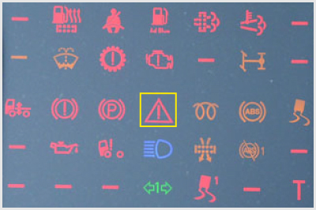
                            </div>
                                                <!-- <h4>665. Mire figyelmeztet a képen a bekeretezett visszajelző lámpa?</h4> -->
                        <dl>
                            <dt>665. Mire figyelmeztet a képen a bekeretezett visszajelző lámpa? <a href="#question-724186"><small>#724186</small></a></dt>
                                                            <dd class="correct">Ha pirosan világít, vagy villog, az olyan hibára, rendellenességre utal, amelyet haladéktalanul el kell hárítani és ehhez a járművel általában meg is kell állni.</dd>
                                                            <dd class="">Ezt a lámpát kizárólag az ütközés veszélyére történő figyelmeztetésre használják.</dd>
                                                            <dd class="">A jármű veszélyes helyen áll, ezért ki kell rakni az elakadásjelző háromszöget.</dd>
                                                            <dd class="">A vészvillogó bekapcsolt állapotára.</dd>
                                                    </dl>
                    </div>
                                                            <div class="question" id="question-724187">
                                                                        <!-- <h4>666. Milyen karbantartást igényel a differenciálmű?</h4> -->
                        <dl>
                            <dt>666. Milyen karbantartást igényel a differenciálmű? <a href="#question-724187"><small>#724187</small></a></dt>
                                                            <dd class="correct">Előírt időközönként ellenőrizni kell az olajszintet és ki kell cserélni az olajat.</dd>
                                                            <dd class="">Előírt időközönként a differenciálmű csapágyait meg kell zsírozni.</dd>
                                                            <dd class="">Előírt időközönként be kell állítani a csapágyak holtjátékát.</dd>
                                                    </dl>
                    </div>
                                                            <div class="question" id="question-724188">
                                                                        <!-- <h4>667. Mit okoz az első kerekek nem megfelelő beállítása?</h4> -->
                        <dl>
                            <dt>667. Mit okoz az első kerekek nem megfelelő beállítása? <a href="#question-724188"><small>#724188</small></a></dt>
                                                            <dd class="correct">A jármű irányíthatósága romlik, stabilitása csökken és a gumiabroncsok rendellenesen kophatnak.</dd>
                                                            <dd class="">Hátramenetben nehezen irányíthatóvá válik a jármű.</dd>
                                                            <dd class="">A megváltozott menettulajdonságok miatt a jármű pótkocsi vontatására alkalmatlanná válik.</dd>
                                                            <dd class="">A lengéscsillapítók viszonylag kis futásteljesítmény után meghibásodnak.</dd>
                                                    </dl>
                    </div>
                                                            <div class="question" id="question-724190">
                                                                        <!-- <h4>668. Hogyan kell végrehajtani a jármű felső mosását?</h4> -->
                        <dl>
                            <dt>668. Hogyan kell végrehajtani a jármű felső mosását? <a href="#question-724190"><small>#724190</small></a></dt>
                                                            <dd class="correct">Bő vízzel, kis nyomással, kézzel vagy géppel.</dd>
                                                            <dd class="">Kevés vízzel, géppel.</dd>
                                                            <dd class="">Bő vízzel, erős nagynyomású vízsugárral, kézzel.</dd>
                                                            <dd class="">Bő vízzel, erős nagynyomású vízsugárral, géppel.</dd>
                                                    </dl>
                    </div>
                                                            <div class="question" id="question-724191">
             0 `(   $ 0"            "0(A(�0$  0 `(                 ! � <!-- <h4>669. A!zG�rv zdndszmr� hűtE�r'ndszerben hol kell ellenűr�jni c nnlyadékszintet?</H4�8-
:
                ( $    <dl>
                    �0 "  0<&t>669. A`zÀrt`reOdszerű h��t�rendszerben hol kell ellenőrizni a folyadékszintet? <a href="#question-62�191"><sm!ll#724191</smalm>�/a></dT>�                 �0            " (!            0 `(        <dd class="corrdc�">A ki�gy'~l��t��t`vtályban.</dd>
                        `             " (!                 <dd class="">A |eRiosztátházb`n�</dd>
             �0  `                   ! �                ! �dd clasw=2 A�xűtőtömbben.</dd>
$ 0"                                    �00 `(  " (=/dl>
           0 a(�    ,/a�.
                �  b                </div>
            </div>
      �0               <div c�as1="groepr()l9"wpoup-16686:2<66">
    `       � 0|h2>
           ! �    0 ˩li ��rd�el6etés     0 `(           (1 db., 1 pont)
                </h2>
                <div class="questions">
                                                            <div class="question" id="question-704463">
                                                                        <!-- <h4>670. Szükséges-e - a tél beállta előtt - fagyálló ablakmosó folyadékkal feltölteni az ablakmosó tartályát?</h4> -->
                        <dl>
                            <dt>670. Szükséges-e - a tél beállta előtt - fagyálló ablakmosó folyadékkal feltölteni az ablakmosó tartályát? <a href="#question-704463"><small>#704463</small></a></dt>
                                                            <dd class="correct">Igen, mert a berendezés lefagyhat, így működésképtelenné válhat.</dd>
                                                            <dd class="">Nem, mert az ablakmosó rendszer külön fűtéssel rendelkezik.</dd>
                                                            <dd class="">Nem, mert télen egyébként sem célszerű az ablakmosót használni.</dd>
                                                    </dl>
                    </div>
                                                            <div class="question" id="question-704489">
                                                                        <!-- <h4>671. Hatással van-e a téli, hideg időjárás a gázolaj használhatóságára?</h4> -->
                        <dl>
                            <dt>671. Hatással van-e a téli, hideg időjárás a gázolaj használhatóságára? <a href="#question-704489"><small>#704489</small></a></dt>
                                                            <dd class="correct">Igen, a paraffin nagy hidegben kiválhat, emiatt a szűrők is eltömődhetnek.</dd>
                                                            <dd class="">Nem, mert ez csak egészen extrém időjárási viszonyok mellett fordulhatna elő.</dd>
                                                            <dd class="">Igen, mert a gázolaj befagy a rendszerbe.</dd>
                                                            <dd class="">Igen, mert egy bizonyos hőmérséklet alatt a gázolaj már nem éghető anyag.</dd>
                                                    </dl>
                    </div>
                                                            <div class="question" id="question-704509">
                                                                        <!-- <h4>672. Milyen hosszan és milyen időközönként célszerű indítózni, amikor a motor (pl. télen) nehezen indítható?</h4> -->
                        <dl>
                            <dt>672. Milyen hosszan és milyen időközönként célszerű indítózni, amikor a motor (pl. télen) nehezen indítható? <a href="#question-704509"><small>#704509</small></a></dt>
                                                            <dd class="correct">Indítózás 10 másodpercig, majd 20 másodpercet követően lehet ismét próbálkozni.</dd>
                                                            <dd class="">Maximum egy percig, majd két perc szünet után célszerű ismét próbálkozni.</dd>
                                                            <dd class="">30 másodpercig, majd 5 másodperc szünet után lehet ismét próbálkozni.</dd>
                                                    </dl>
                    </div>
                                                            <div class="question" id="question-704745">
                                                                        <!-- <h4>673. Szabad-e hideg téli időben a szélvédőn lefagyott ablaktörlő lapátot működésbe hozni?</h4> -->
                        <dl>
                            <dt>673. Szabad-e hideg téli időben a szélvédőn lefagyott ablaktörlő lapátot működésbe hozni? <a href="#question-704745"><small>#704745</small></a></dt>
                                                            <dd class="correct">Nem, mivel a lefagyott ablaktörlő lapátot nem tudja megmozdítani az ablaktörlő motorja, ezért az könnyen leéghet, és ezáltal működésképtelenné válhat.</dd>
                                                            <dd class="">Nem, mert működés közben a jég megkarcolja a szélvédőt.</dd>
                                                            <dd class="">Igen, mert így könnyebben el tudja távolítani az összes jeget a szélvédőről.</dd>
                                                    </dl>
                    </div>
                                                            <div class="question" id="question-704829">
                                                                        <!-- <h4>674. Milyen hatása van a hidegben összesűrűsödött kenőolajnak a motor indíthatóságára?</h4> -->
                        <dl>
                            <dt>674. Milyen hatása van a hidegben összesűrűsödött kenőolajnak a motor indíthatóságára? <a href="#question-704829"><small>#704829</small></a></dt>
                                                            <dd class="correct">Megnehezíti a motor beindítását.</dd>
                                                            <dd class="">A motor indíthatósága nem változik.</dd>
                                                            <dd class="">Könnyebb lesz a motor beindítása.</dd>
                                                    </dl>
                    </div>
                                                            <div class="question" id="question-704830">
                                                                        <!-- <h4>675. Hogyan hat a hideg külső hőmérséklet a dízelmotor indíthatóságára?</h4> -->
                        <dl>
                            <dt>675. Hogyan hat a hideg külső hőmérséklet a dízelmotor indíthatóságára? <a href="#question-704830"><small>#704830</small></a></dt>
                                                            <dd class="correct">Hidegben kisebb lesz a sűrítési véghőmérséklet és ezáltal a hőfelesleg, ami csökkenti az indíthatóságot.</dd>
                                                            <dd class="">A hideg levegő sűrűbb, ezért a dugattyú több levegőt tud beszívni az égéstérbe így nő a légfelesleg, vagyis javul az indíthatóság.</dd>
                                                            <dd class="">A hideg levegőt jobban össze tudja sűríteni a dugattyú, ezáltal javul a motor indíthatósága.</dd>
                                                    </dl>
                    </div>
                                                            <div class="question" id="question-704831">
                                                                        <!-- <h4>676. Milyen karbantartást igényel a hűtőberendezés a téli üzemeltetésre történő felkészítés során?</h4> -->
                        <dl>
                            <dt>676. Milyen karbantartást igényel a hűtőberendezés a téli üzemeltetésre történő felkészítés során? <a href="#question-704831"><small>#704831</small></a></dt>
                                                            <dd class="correct">Meg kell mérni és szükség szerint be kell állítani a hűtőfolyadék fagyáspontját, ellenőrizni kell a csőkötéseket és meg kell tisztítani a hűtőtömböt.</dd>
                                                            <dd class="">Az általános tisztításon kívül más karbantartási feladatot nem kell végrehajtani.</dd>
                                                            <dd class="">A csőkötéseket ellenőrizni kell és a kigyenlítő tartály folyadékszintjét a maximumig fel kell tölteni.</dd>
                                                    </dl>
                    </div>
                                                            <div class="question" id="question-704832">
                                                                        <!-- <h4>677. Létezik-e téli és nyári gázolaj?</h4> -->
                        <dl>
                            <dt>677. Létezik-e téli és nyári gázolaj? <a href="#question-704832"><small>#704832</small></a></dt>
                                                            <dd class="correct">Igen, a töltőállomások az évszakok, illetve az időjárás változásának függvényében állnak át a megfelelő gázolaj kiszolgálására.</dd>
                                                            <dd class="">Nem, a töltőállomásokon évszaktól függetlenül csak azonos gázolajat lehet tankolni.</dd>
                                                            <dd class="">igen, mindig a járművezetőnek kell kiválasztania, hogy milyen gázolajat akar tankolni.</dd>
                                                    </dl>
                    </div>
                                                            <div class="question" id="question-704833">
                                                                        <!-- <h4>678. A téli igénybevétel előtt miért célszerű a nyári gumiabroncsot télire cserélni?</h4> -->
                        <dl>
                            <dt>678. A téli igénybevétel előtt miért célszerű a nyári gumiabroncsot télire cserélni? <a href="#question-704833"><small>#704833</small></a></dt>
                                                            <dd class="correct">Mert plusz 7 Celsius-fok alatt a nyári abroncs veszít rugalmasságából, és nem biztosít megfelelő tapadást.</dd>
                                                            <dd class="">Mert a téli abroncs sokkal keményebb, és jeges úton könnyebb vele közlekedni.</dd>
                                                            <dd class="">Mert télen a nyári abroncs túlzottan kopna, és megnövekedne a jármű tüzelőanyagfogyasztása.</dd>
                                                    </dl>
                    </div>
                                                            <div class="question" id="question-704836">
                                                                        <!-- <h4>679. Miért nem szabad a gázolajba télen sem benzint bekeverni?</h4> -->
                        <dl>
                            <dt>679. Miért nem szabad a gázolajba télen sem benzint bekeverni? <a href="#question-704836"><small>#704836</small></a></dt>
                                                            <dd class="correct">Mert a benzinnek nem megfelelő a kenőképessége és a befecskendező rendszer alkatrészei tönkremehetnek.</dd>
                                                            <dd class="">Mert kicsi lesz a sűrítési véghőmérséklet és nehezebben fog beindulni a motor.</dd>
                                                            <dd class="">Mert csökken a befecskendezési nyomás és ezzel a motor teljesítménye.</dd>
                                                    </dl>
                    </div>
                                                            <div class="question" id="question-704837">
                                                                        <!-- <h4>680. A korszerű dízelmotorok lángizzító berendezése...</h4> -->
                        <dl>
                            <dt>680. A korszerű dízelmotorok lángizzító berendezése... <a href="#question-704837"><small>#704837</small></a></dt>
                                                            <dd class="correct">hideg időben, illetve hideg motornál automatikusan működik és visszajelző lámpájával tájékoztatja a vezetőt, hogy a megfelelő hőmérséklet elérése után indíthatja a motort.</dd>
                                                            <dd class="">kézi működtetésű, a vezetőnek kell eldöntenie, hogy a motor és a környezet hőmérsékletének függvényében szükség van-e a működtetésére.</dd>
                                                            <dd class="">automatikus működésű, hideg motor esetében az indítózás idejére kapcsol be.</dd>
                                                    </dl>
                    </div>
                                                            <div class="question" id="question-704838">
                                                                        <!-- <h4>681. Téli üzemelés során a hűtőfolyadék hőmérséklete...</h4> -->
                        <dl>
                            <dt>681. Téli üzemelés során a hűtőfolyadék hőmérséklete... <a href="#question-704838"><small>#704838</small></a></dt>
                                                            <dd class="correct">megfelelő működés esetén ugyanúgy eléri az előírt üzemi hőmérsékletet, mint nyáron.</dd>
                                                            <dd class="">csak akkor éri el az előírt üzemi hőmérsékletet, ha a vezetőfülke fűtését nem hasznájuk.</dd>
                                                            <dd class="">10-20 Celsius-fokkal alacsonyabb értéket vesz fel, mint nyáron.</dd>
                                                    </dl>
                    </div>
                                                            <div class="question" id="question-714663">
                                                                        <!-- <h4>682. Télen milyen folyadékkal kell feltölteni az ablakmosófolyadék tartályát?</h4> -->
                        <dl>
                            <dt>682. Télen milyen folyadékkal kell feltölteni az ablakmosófolyadék tartályát? <a href="#question-714663"><small>#714663</small></a></dt>
                                                            <dd class="correct">Fagyálló ablakmosó-folyadékkal.</dd>
                                                            <dd class="">Desztillált vagy ioncserélt vízzel.</dd>
                                                            <dd class="">A motor hűtőrendszerében is használt fagyálló folyadékkal.</dd>
                                                    </dl>
                    </div>
                                                            <div class="question" id="question-721223">
                                                                        <!-- <h4>683. Miért kell télen, hidegben megakadályozni a gázolaj megdermedését?</h4> -->
                        <dl>
                            <dt>683. Miért kell télen, hidegben megakadályozni a gázolaj megdermedését? <a href="#question-721223"><small>#721223</small></a></dt>
                                                            <dd class="correct">Mert a nagy hidegben a paraffinkiválás miatt eltömődhetnek a gázolajszűrők.</dd>
                                                            <dd class="">Mert ekkor nem tudna megfelelő nyomást előállítani a befecskendezőszivattyú.</dd>
                                                            <dd class="">Mert a megdermedt gázolajat a porlasztó nem tudná kellő finomságban befecskendezni az égéstérbe.</dd>
                                                    </dl>
                    </div>
                                    </div>
            </div>
        </div>
    </div>

    <div class="topic-footer-nav" style="margin-top: 40px;">
        <div class="topic-nav-bar">
            <a href="group-1668682265.html" class="nav-btn nav-prev-btn" title="Elektronikus fék- és menetdinamikai rendszerek">&laquo; Előző témakör</a>
            <a href="index.html" class="nav-btn nav-hub-btn">Témakörök listája</a>
            <a href="#top" class="nav-btn nav-top-btn" onclick="window.scrollTo({top:0,behavior:'smooth'}); return false;">^ Tetejére</a>
            <span class="nav-btn nav-disabled">Következő témakör &raquo;</span>
        </div>
        <p style="margin-top: 24px; text-align: center;"><a href="index.html" class="back-btn"><strong>&laquo; Vissza a „C” kategória - Szerkezeti és üzemeltetési ismeretek témaköreihez</strong></a></p>
    </div>

    <script src="../search.js"></script>
</body>
</html>